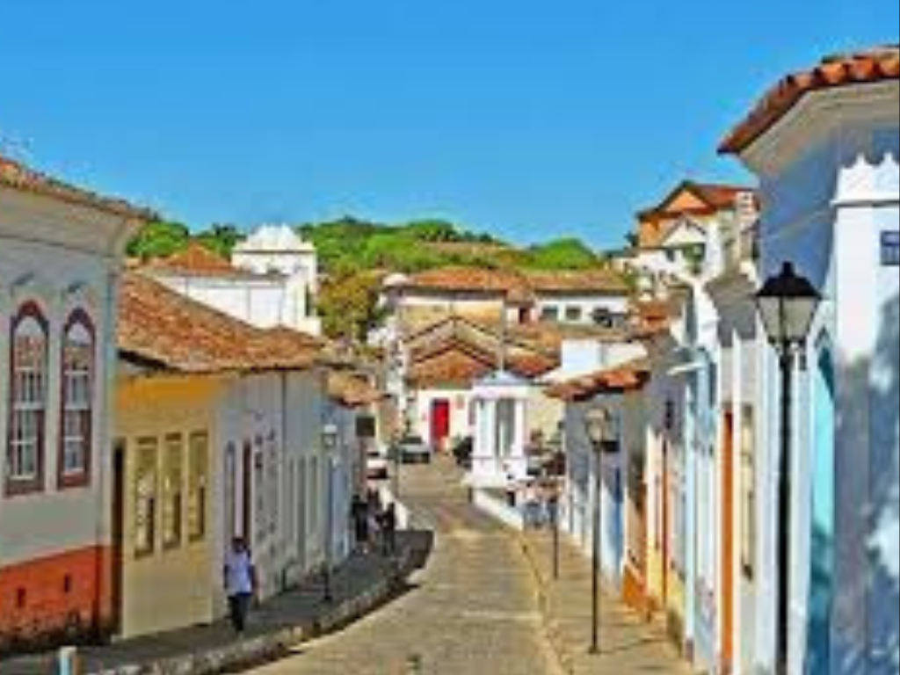

O Goiás é um estado localizado na região Centro-Oeste do Brasil, conhecido por sua forte tradição agropecuária, riqueza cultural e belezas naturais. Sua capital, Goiânia, destaca-se pelo planejamento urbano, qualidade de vida e intensa cena cultural. Goiás possui importante participação na economia nacional, especialmente na produção de grãos, carnes e minérios, além de abrigar destinos turísticos famosos, como Caldas Novas, conhecida por suas águas termais, e o Parque Nacional da Chapada dos Veadeiros, reconhecido por suas paisagens naturais exuberantes e biodiversidade única. A cultura goiana também é marcada pela música sertaneja, pela culinária típica e pelas tradicionais festas populares do interior.

voltar